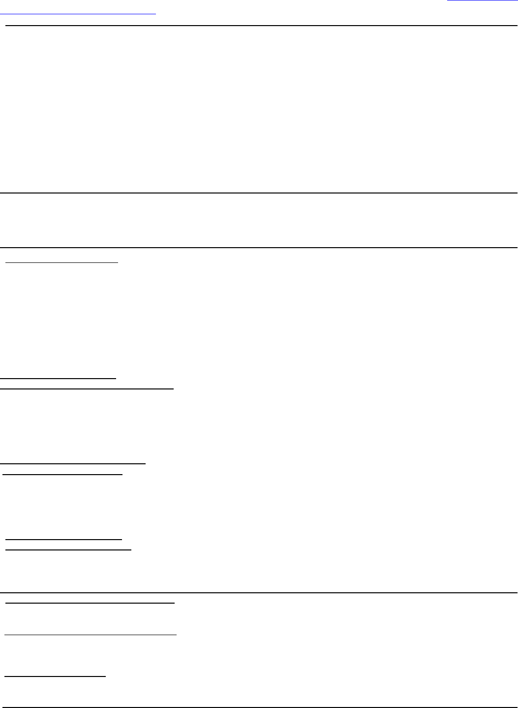

ASHOK
KUMAR
1235 E Ocean Blvd, Apt A-10, Long Beach, CA 90802
https://www.linkedin.com/in/ashoksangwan
ashok.mac3@gmail.com
714-681-8991
Professional Summary
Masters in Computer Science.
2+ experience in Software Development.
Expert knowledge and experience of web architecture(Rest), JavaScript(Typescript), and NodeJS.
Proficient with web client technologies including HTML5, CSS3, and related front-end frameworks (Express, React JS).
Expertise in Version control using Git and Bitbucket.
Deep understanding and hands-on of core Java, OOP & Design Patterns.
Working experience with Deployment on PAAS (Microsoft Azure, Amazon Web Services) and Go-Daddy Web hosting
tools.
Experience in Handlebars, JQuery (document traversing, event handling), Ajax server calls.
Experience in Scrum, Agile Methodologies and Issue/Bug Tracking using JIRA.
Working Knowledge of integrating Databases (Mongo DB / MySQL) using Node js and java.
Highly adaptive learner and analytical technology freak with a penchant for adapting changes.
Additional Web Skills: Proficient in SEO, SEM, WordPress, Google Analytics, Google Webmaster tools, Robots.txt,
Search engine submissions, Search visibility.
Education
California State University,
Fullerton
M.S in Computer
Science (GPA-3.21)
Aug 2014 - Aug
2016
Guru Gobind Singh Indraprastha, New Delhi, India Aug 2010 - Aug
2014
B. E in Information and
Technology (GPA-3.56)
Work Experience
Noribachi, Los Angeles, USA June 2016-Present
Role: Computer Science Engineer
Project Pulse: Developed Multi-threaded Java IOT based Desktop software pulse 2 to interact with Arduino over UDP network in real-time.
Pulse 2 controls LEDs and retrieve data from various sensors which make them Smart LED.
Web Development project: SiteAdmin
Worked end to end on restful Web application which is based on MVC pattern.
Automated tasks using Grunt: minifying CSS, Handlebars.
Moved website template from Mustache.js to Handlebars.js.
Implemented file/image uploads using multer.
Created a schedule using npm-schedule for writing to Google sheet using Google API.
Technology stack: Nodejs, JQuery, Express, Handlebars, Ajax, HTML/CSS.
Amazon Web services, Seattle
Role: Software developer engineering intern Jan 2016- May 2016
Worked on supply chain to provide a system to dynamically provide user short-term credentials.
Implemented restful Web service and performed database operations.
Worked on Ruby on rails to create rich interactive content using MVC.
Integrated dynamo DB (Cassandra) with java web service for large datasets.
Gained working experience on bootstrap, HTML, restful API, Java, Databases/SQL, DB2, Web Services, TDD/JUnit, RHEL5, Git-
farm, Git, Shell.
California State University, Fullerton Oct 2015 -
Dec 2015
Role: Web Software Developer
Good hands on experience on server side programming skills in Java (apache tomcat).
Developed WordPress website using frontend HTML, CSS, JavaScripts.
Worked on Ruby on rails to create rich interactive content using MVC.
Integrated java server to produce dynamic pages.
Managed Go-daddy domains and hosting accounts.
I-Catch Marketing, San Diego July 2015 – Oct 2015
Role: WordPress Developer /Seo
Improved Page speed by 50% and improved website on-page google ranking significantly.
Setup and analyzed Google analytics and Webmaster tools for organic search rankings.
Created XML Sitemap and submitted on google and yahoo search engines.
Academic Projects:
Movie Rating and Recommendation System
Made queries on Cassandra 10 million dataset using sparkSQL.
Designed a recommendation model using Hive, HDFS, Java Spark, Cassandra, Spark-hive-thrift server.
Research Project- Artificial Neural Network
Implemented the Backpropagation Algorithm using a Single Layer Feed Forward Neural Network. Streamlined the evaluation of the
problem of distinguishing a Male and Female crab using the Backpropagation algorithm. Designed a neural network based on
Backpropagation algorithm to separate different fruits based on their feature, size, texture using MATLAB.
Website Design: Le Delice
Designed a website for a startup company Le Delice based in Delhi, India. As a lead Developer for the website designed the site
using WordPress, HTML5, CSS3, Google maps api.
Academic Achievements:
Built Android and blackberry applications using emulator with more than 20k Downloads.
Participated and amazon 2016 intern Hackathon.